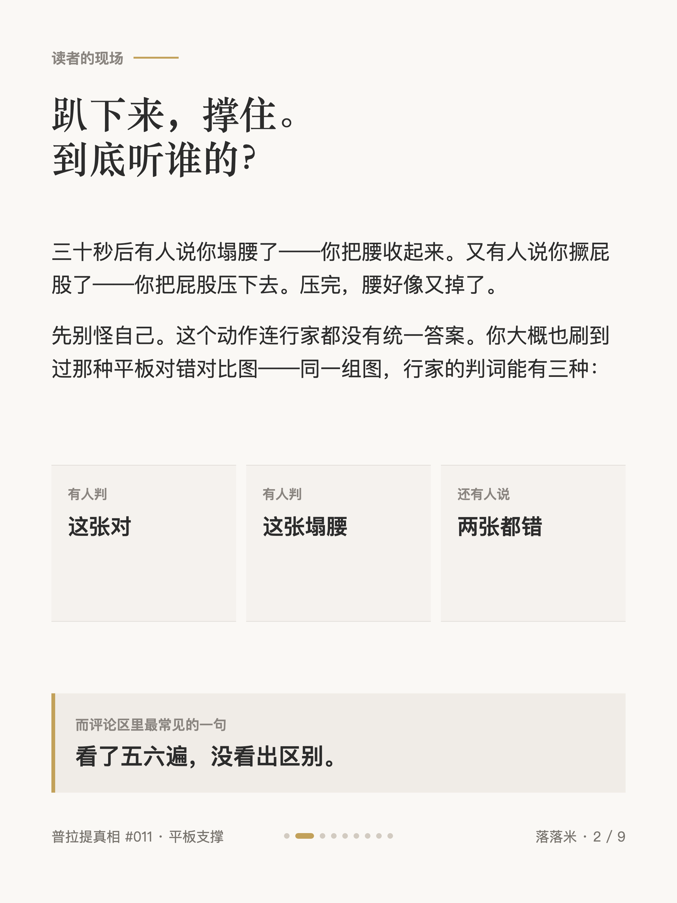
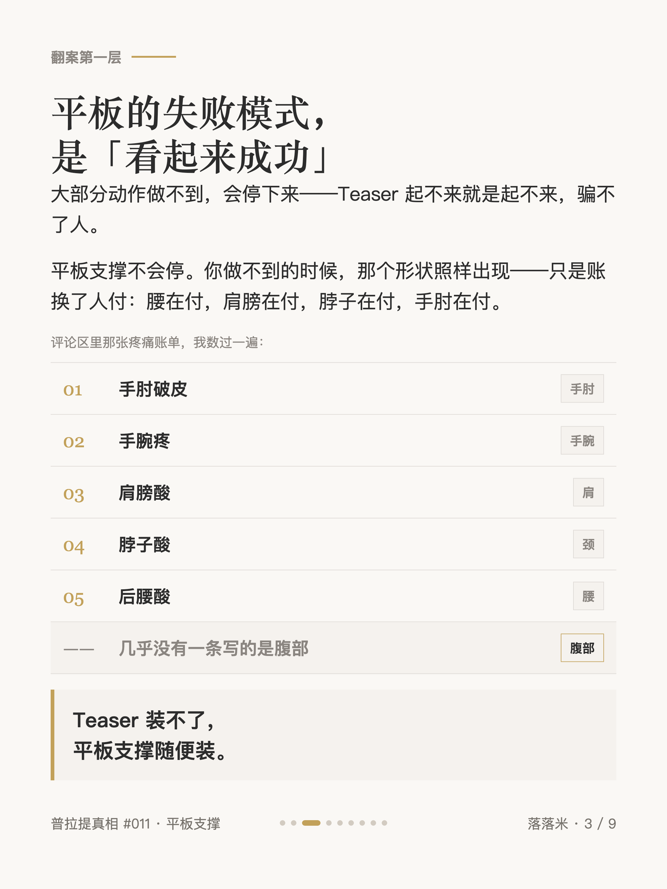
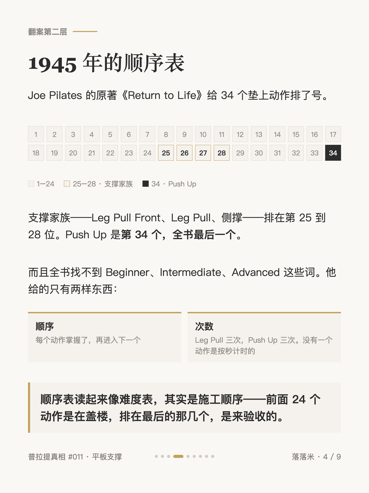
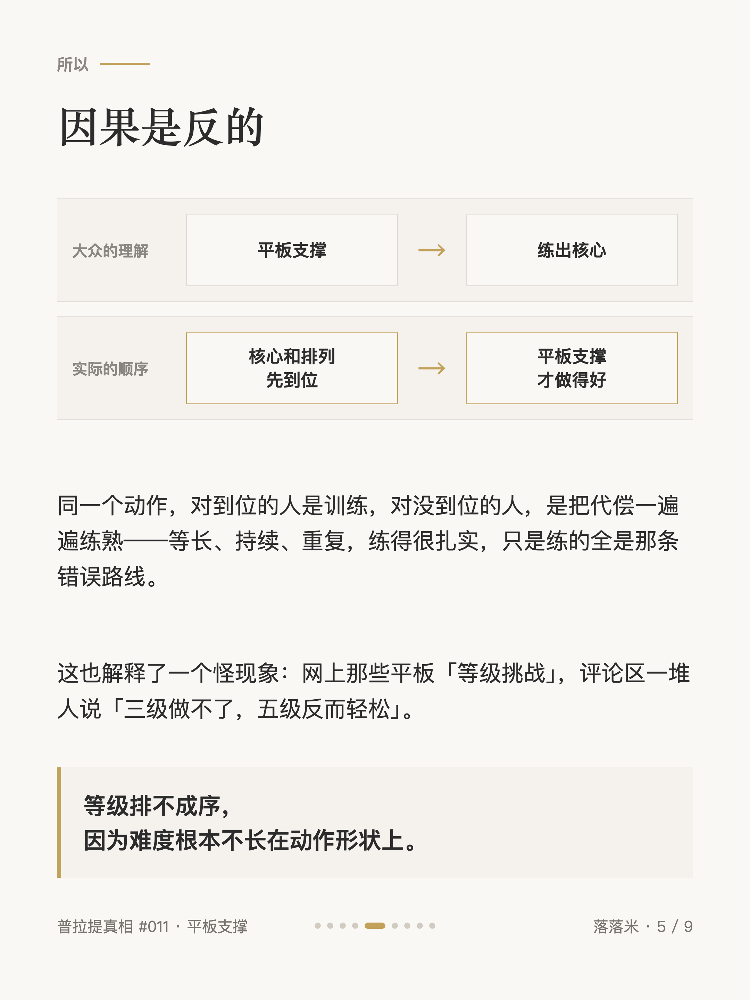
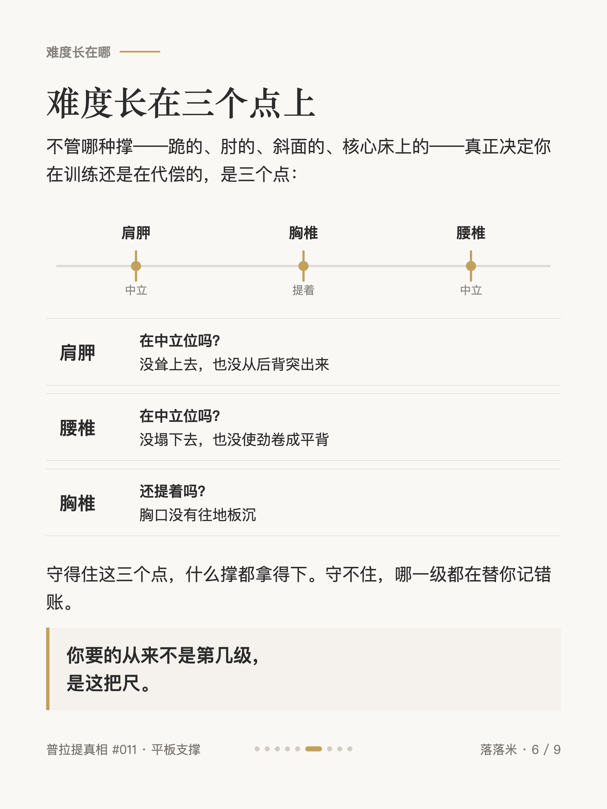
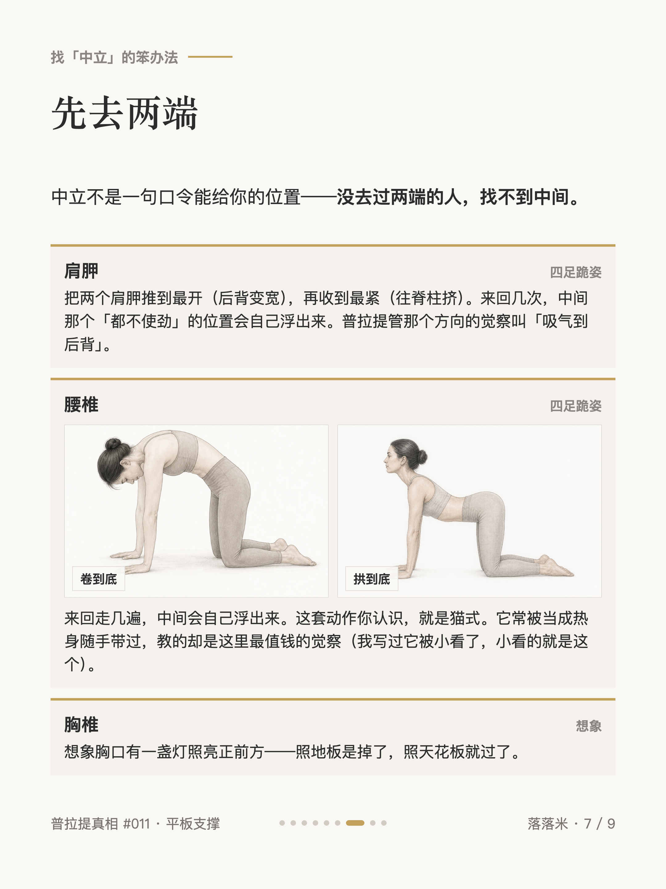
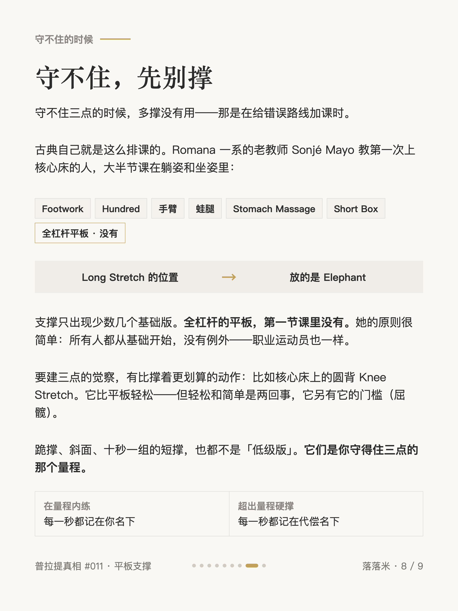
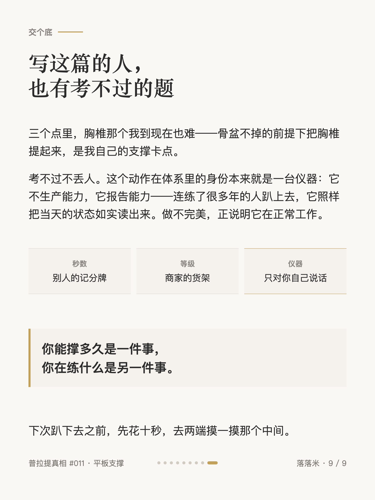

普拉提真相 #011
平板支撑塌腰，普拉提先看顺序

1 / 9

2 / 9

3 / 9

4 / 9

5 / 9

6 / 9

7 / 9

8 / 9

9 / 9
← 左右滑动浏览全部卡片 →
趴下来，撑住。到底听谁的？
平板支撑不会停。你做不到的时候，那个形状照样出现——只是账换了人付：腰在付，肩膀在付，脖子在付，手肘在付。
顺序表读起来像难度表，其实是施工顺序——前面 24 个动作是在盖楼，排在最后的那几个，是来验收的。
你能撑多久是一件事，你在练什么是另一件事。下次趴下去之前，先花十秒，去两端摸一摸那个中间。